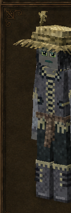
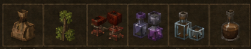

Viticultor
Vintner · código oficial
vintner · ficha 15/16
Rasgos: 7
Bonus: 11
Malus: 6
Recetas: 53

Resumen humano
setas, fruta, vidrio y bebidas. Crea infraestructura y consumibles de valor.
Esta línea es interpretación funcional breve; lo importante son los números y recetas de abajo.
Bonus objetivos
- ahorro de durabilidad de cuchillo: **+75%** (valor interno `0.75`)
- ahorro de durabilidad de tijeras: **+75%** (valor interno `0.75`)
- cosecha suave de horno bajo/bloomery: **activado (+1)** (valor interno `1`)
- curación recibida: **+25%** (valor interno `0.25`)
- daño recibido por veneno: **-90%** (valor interno `-0.9`)
- drop de forraje/recolección silvestre: **+100%** (valor interno `1`)
- drop de frutales: **+100%** (valor interno `1`)
- drop de semillas/brotes de árbol: **+100%** (valor interno `1`)
- saciedad de bebidas: **+100%** (valor interno `1`)
- velocidad con hojas: **+100%** (valor interno `1`)
- velocidad con plantas: **+100%** (valor interno `1`)
Malus objetivos
- drop de mineral: **-10%** (valor interno `-0.1`)
- pérdida de estabilidad temporal: **+25%** (valor interno `0.25`)
- saciedad de comida simple: **-10%** (valor interno `-0.1`)
- saciedad de comidas preparadas: **-10%** (valor interno `-0.1`)
- velocidad al picar mineral: **-10%** (valor interno `-0.1`)
- velocidad al picar piedra: **-10%** (valor interno `-0.1`)
Rasgos oficiales y efectos reales
| Rasgo | Tipo | Datos objetivos |
|---|---|---|
Mitridatistamithridatist | positivo | daño recibido por veneno: -90% (interno -0.9)saciedad de bebidas: +100% (interno 1)curación recibida: +25% (interno 0.25) |
Viticultorvintner | positivo | sin atributos numéricos en traits.json; desbloqueo/rasgo de receta |
Recolectorgatherer | positivo | drop de forraje/recolección silvestre: +100% (interno 1)drop de frutales: +100% (interno 1)drop de semillas/brotes de árbol: +100% (interno 1) |
Fundidorbloomer | positivo | cosecha suave de horno bajo/bloomery: activado (+1) (interno 1) |
Selectorpicker | positivo | velocidad con hojas: +100% (interno 1)velocidad con plantas: +100% (interno 1)ahorro de durabilidad de tijeras: +75% (interno 0.75)ahorro de durabilidad de cuchillo: +75% (interno 0.75) |
Delicadodelicate | negativo | drop de mineral: -10% (interno -0.1)velocidad al picar mineral: -10% (interno -0.1)velocidad al picar piedra: -10% (interno -0.1)pérdida de estabilidad temporal: +25% (interno 0.25) |
Dependientedependent | negativo | saciedad de comidas preparadas: -10% (interno -0.1)saciedad de comida simple: -10% (interno -0.1) |
Recetas / desbloqueos
36mesa normal
2estación
15compatibilidad
53salidas listadas
Categorías detectadas
Esquejes y recortes de plantas: 12Tintado de vidrio: 10Líquidos y recipientes: 5Tejados y piezas de cubierta: 5Alchemy: vidrio de alquimia: 4Food Shelves: almacenamiento de líquidos: 4A Culinary Artillery: embotellado: 3Trabajo de vidrio: 2Mesa de germinación: 2NDL Mushroom Growth: cultivo: 2Substrate: cultivo: 2Arbustos: 1Bolsa de fructificación: 1
Ver salidas exactas de recetas de esta clase (53)
| Modo | Categoría legible | Resultado legible | Nombre ES |
|---|---|---|---|
| mesa de crafteo normal | Arbustos | Fruitingbushcutting berrytype libre ×1 | — |
| mesa de crafteo normal | Esquejes y recortes de plantas | Fruittree cutting ×1 | — |
| mesa de crafteo normal | Esquejes y recortes de plantas | Fruittree cutting ×1 | — |
| mesa de crafteo normal | Esquejes y recortes de plantas | Fruittree cutting ×1 | — |
| mesa de crafteo normal | Esquejes y recortes de plantas | Fruittree cutting ×1 | — |
| mesa de crafteo normal | Esquejes y recortes de plantas | Fruittree cutting ×1 | — |
| mesa de crafteo normal | Esquejes y recortes de plantas | Fruittree cutting ×1 | — |
| mesa de crafteo normal | Esquejes y recortes de plantas | Fruittree cutting ×1 | — |
| mesa de crafteo normal | Esquejes y recortes de plantas | Fruittree cutting ×1 | — |
| mesa de crafteo normal | Esquejes y recortes de plantas | Fruittree cutting ×1 | — |
| mesa de crafteo normal | Esquejes y recortes de plantas | Fruittree cutting ×1 | — |
| mesa de crafteo normal | Esquejes y recortes de plantas | Fruittree cutting ×1 | — |
| mesa de crafteo normal | Esquejes y recortes de plantas | Fruittree cutting ×1 | — |
| mesa de crafteo normal | Bolsa de fructificación | Fruitingbag empty ×1 | — |
| mesa de crafteo normal | Tintado de vidrio | Glass azul ×8 | — |
| mesa de crafteo normal | Tintado de vidrio | Glass violet ×8 | — |
| mesa de crafteo normal | Tintado de vidrio | Glass roja ×8 | — |
| mesa de crafteo normal | Tintado de vidrio | Glass yellow ×8 | — |
| mesa de crafteo normal | Tintado de vidrio | Glass marrón ×8 | — |
| mesa de crafteo normal | Tintado de vidrio | Glass pink ×8 | — |
| mesa de crafteo normal | Tintado de vidrio | Glass green ×8 | — |
| mesa de crafteo normal | Tintado de vidrio | Glass vintage ×8 | — |
| mesa de crafteo normal | Tintado de vidrio | Glass cuarzo ×8 | — |
| mesa de crafteo normal | Tintado de vidrio | Glass smoky ×8 | — |
| mesa de crafteo normal | Trabajo de vidrio | Cuarzo transparente ×1 | — |
| mesa de crafteo normal | Trabajo de vidrio | Glasspane leaded Madera y carpintería este-oeste ×4 | — |
| mesa de crafteo normal | Líquidos y recipientes | Barrel ×1 | — |
| mesa de crafteo normal | Líquidos y recipientes | Woodbucket ×1 | — |
| mesa de crafteo normal | Líquidos y recipientes | Fruitpress norte-sur ×1 | — |
| mesa de crafteo normal | Líquidos y recipientes | Verticalboiler oeste ×1 | — |
| mesa de crafteo normal | Líquidos y recipientes | Condenser oeste ×1 | — |
| mesa de crafteo normal | Tejados y piezas de cubierta | Tejado inclinado sod este libre ×16 | — |
| mesa de crafteo normal | Tejados y piezas de cubierta | Cumbrera de tejado sod norte-sur libre ×16 | — |
| mesa de crafteo normal | Tejados y piezas de cubierta | Punta de tejado sod libre ×2 | — |
| mesa de crafteo normal | Tejados y piezas de cubierta | Esquina interior de tejado sod este libre ×16 | — |
| mesa de crafteo normal | Tejados y piezas de cubierta | Esquina exterior de tejado sod este libre ×16 | — |
| estación especial | Mesa de germinación | Fruittree cutting ×1 | — |
| estación especial | Mesa de germinación | Fruitingbushcutting berrytype libre ×1 | — |
| receta de compatibilidad | A Culinary Artillery: embotellado | Bottlerack envejecido envejecido norte ×2 | — |
| receta de compatibilidad | A Culinary Artillery: embotellado | Bottle glass color fired ×8 | — |
| receta de compatibilidad | A Culinary Artillery: embotellado | Cork genérica ×16 | — |
| receta de compatibilidad | Alchemy: vidrio de alquimia | Herbrack Madera y carpintería metal ×2 | — |
| receta de compatibilidad | Alchemy: vidrio de alquimia | Potionflask normal liso ×2 | — |
| receta de compatibilidad | Alchemy: vidrio de alquimia | Potionflask round liso ×2 | — |
| receta de compatibilidad | Alchemy: vidrio de alquimia | Potionflask tube liso ×2 | — |
| receta de compatibilidad | Food Shelves: almacenamiento de líquidos | Tunrack normal norte ×1 | — |
| receta de compatibilidad | Food Shelves: almacenamiento de líquidos | Tun normal ×1 | — |
| receta de compatibilidad | Food Shelves: almacenamiento de líquidos | Barrelrack normal este ×1 | — |
| receta de compatibilidad | Food Shelves: almacenamiento de líquidos | Buckethook normal este ×1 | — |
| receta de compatibilidad | NDL Mushroom Growth: cultivo | Basetrough ×1 | — |
| receta de compatibilidad | NDL Mushroom Growth: cultivo | Mushroomspores mushroom ×1 | — |
| receta de compatibilidad | Substrate: cultivo | Growbed ×1 | — |
| receta de compatibilidad | Substrate: cultivo | Fruitingbag ×1 | — |
Archivos de esta ficha
Las exportaciones PNG/MD se generan desde la ficha dinámica actual.